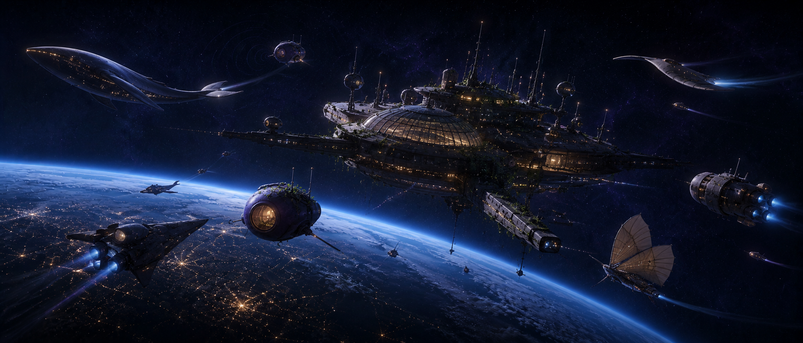

Something is ahead.
One structure. One smaller vessel. Neither appears in your local charts.
relative motion · stable
open frequencies · 2
immediate threat · none detected
open frequencies · 2
immediate threat · none detected

One structure. One smaller vessel. Neither appears in your local charts.